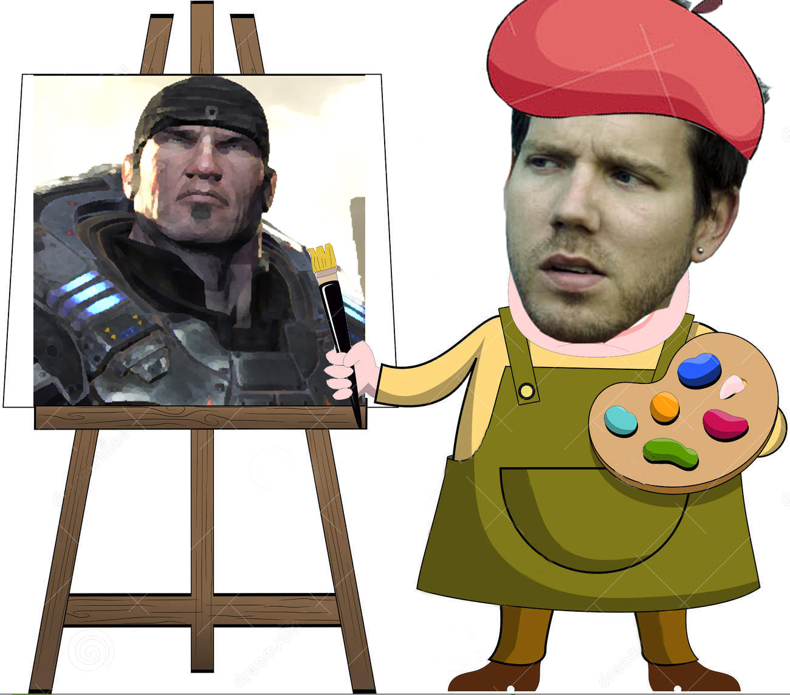
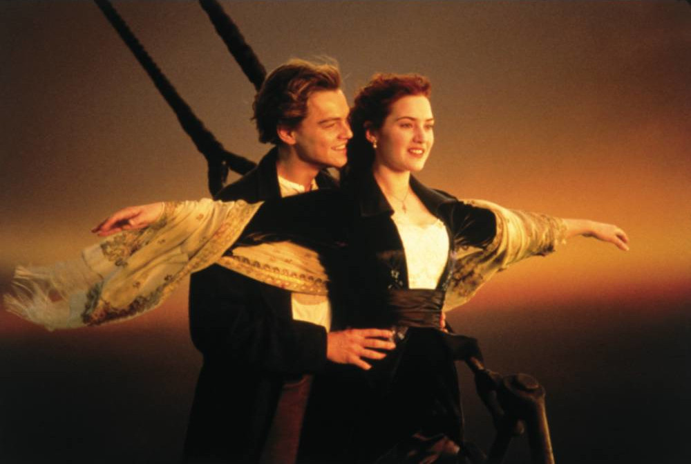
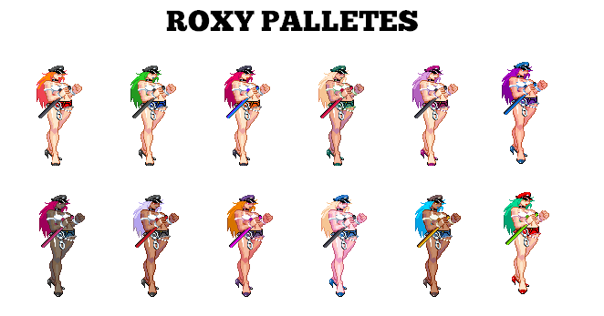
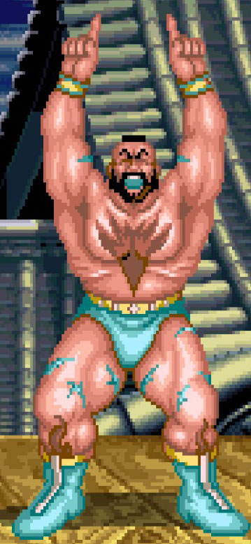
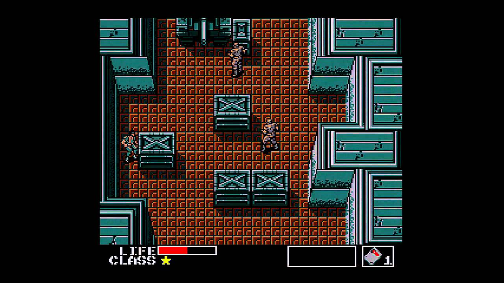
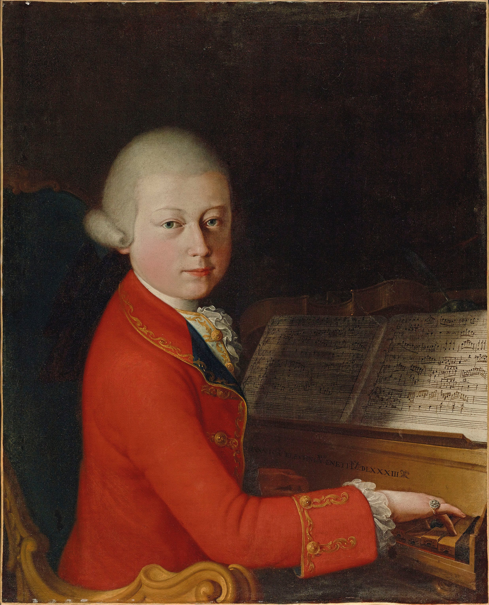

Martes, 24 de Mayo de 2022
Descripción
En esta sección pretendo dejar constancia de distintos artículos que
he ido publicando en varios medios a lo largo de los años. Algunas
fotos se cambiarán con respecto a las originales por cuestiones
nimias como la resolución o la imposibilidad de encontrar
la fuente de la misma.
Por otra parte, se corregirán faltas ortográficas sin un
previo compromiso de encontrarlas todas. A fin de cuentas, son
muchas las horas de redacción que habrá y no siempre son
faltas evidentes. En cualquier caso se hará lo posible por
mantener la ortografía al nivel más alto posible.
Lunes, 24 de Febrero de 2014
El arte y el mecenazgo
Teniendo presente las declaraciones de
Cliff Bleszinski de estos días, me han venido a la
cabeza viejos recuerdos de una película llamada “El tormento y el éxtasis” (Twentieth Century Fox Film Corporation, 1965). Esta
obra nos narra las vicisitudes sufridas por
Miguel Ángel en la
Capilla Sixtina. Durante ese proyecto, no fueron
pocas las discusiones con el Papa Julio II, que
unas veces le discutía su modo de pintar y otras le metía más prisa.
"Cliff B.", al igual que
Miguel Ángel en la película, se queja de tener poca
libertad creativa en lo que respecta a
Gears of Wars y, al recordar todo esto, he decidido
cavilar un poco sobre el mecenazgo y el arte, dado que la simbiosis
que se genera entre ellos suele estar llena de desencuentros.

La faceta artística de Cliff B.
Hay quien ha criticado la película “Titanic”
(1997) por centrar el guion en ese
amor imposible de los protagonistas. Tenemos que entender
que, a la hora de invertir una considerable suma de dinero, los
productores (mecenas) piden garantías a los directores
(artistas). Meter romance en una película es una
forma demostrada de atraer a las masas. De ahí lo que hemos visto en
“El señor de los anillos” o “El Hobbit” en este mismo sentido.
Con los videojuegos encontramos una situación similar. Hoy en día,
un videojuego de los “triple-A” cuestan tanto dinero como
muchas películas. Compositores como
Harry Gregson-Williams se toman un descanso en
Hollywood para hacer más trepidantes las aventuras
de Snake, por poner un ejemplo. Añadamos las
capturas de movimiento, los actores,
doblajes, y el número de personas implicadas para
comprender el volumen de dinero que se llega a mover en este sector.
Esto también explica como, cuando una obra gusta, vemos una
infinidad de secuelas y como, cuando un estilo de juegos se pone de
moda, aparecen otros tantos tratando de llevarse un trozo del
pastel. Durante la época 16 Bits fueron los RPG y
los plataformas, ahora son los FPS y los
sandbox.

La importancia económica del amor.
Nunca debemos olvidar que cada juego es en sí mismo un
proyecto que se inicia, tras hacer un
estudio de mercado y decidirse si vamos a obtener una buena
rentabilidad económica de este proyecto. Al final,
por poco que nos pueda gustar, lo que cuentan son las ventas.
De esta forma, un grupo de artistas como pueden ser los
diseñadores de videojuegos, tienen a su propio "Papa Julio II" encarnado en los inversores, que intentan acelerar el
proceso (adelantar la fecha de salida de un juego para que coincida
con las navidades es un ejemplo) y amoldarlo a las modas
contemporáneas en un intento por maximizar ventas y, por ende, sus
beneficios.
La historia de este sector está plagada de decisiones nefastas en
este sentido. “Vampire: The Masquerade - Bloodlines” es un gran ejemplo de promesas e ilusiones, truncadas al sacarlo
mucho antes de lo deseado para cuadrarlo en fiestas de altas ventas.

La buena de Lara Croft, cuando era Laura Cruz

Lara Croft tal como salió. ¿Busquen las diferencias?.
Esto también explica como es que los héroes siempre son musculosos y
molones y las chicas son todas muy bellas y llevan la mínima ropa
posible. De hecho, los diseños de
Lara Croft previos al primer
Tomb Raider la retrataban como una aventurera mucho
menos “neumática” de lo que pudimos ver al final en este
primer juego. Y, no nos engañemos, las tetas grandes venden. Dead or
Alive 5 ha llegado a poner un modo de selección para el “rebote de las tetas” donde se puede elegir si lo hacen de forma natural o “A lo
Dead or Alive”. En un principio se pensó en
suavizar el tema de la saga, y las incontables quejas de cierto
sector de jugadores les llevó a tomar esta decisión para que todos
estén contentos. Poco útil queda la campaña “I’m a fighter”
que se hizo en un intento de demostrar que el juego era algo más que
“tías en bikini dándose palizas”.
En definitiva, debemos entender que los
directores de cine y creadores de juegos también
deben rendir cuentas a los productores y, por tanto, no son dueños
absolutos del proyecto que dirigen.

La ironía de Final Fantasy.
¿Y que pasaría si no fuera así? Pues ahí tenemos a nuestro amigo
George Lucas para demostrarnos lo que ocurre si
puedes dirigir tres películas poniendo tu propio dinero y sin tener
que pedir opiniones a nadie. No han sido pocas las críticas a los
episodios 1, 2 y 3 de Star Wars en este respecto.
También tenemos un caso a caballo entre videojuegos y cine que fue
“Final Fantasy - La fuerza interior” donde los
directivos de Square descubrieron demasiado tarde
lo que pasa si se le da carta blanca a un director para que
haga lo que quiera. Las decisiones de
Hironobu Sakaguchi costaron a
Square el ser absorbida por Enix y
convertirse en lo que son hoy en día. Es toda una ironía, el primer
juego de Final Fantasy salvó la vida de
Square y la película la mató.
Al final, comprendemos que es bueno que haya productores e
inversores, pero es necesario que tengan cabeza y no se agarren como
un clavo ardiendo a esos clichés tan manidos para que las
obras sigan gozando de frescura propia.
Miércoles, 17 de Julio de 2013
Fuerzas de flaqueza
Cuando se empezó a realizar los borradores de lo que sería
Regreso al Futuro, la idea inicial era que el coche
fuera una especie de nevera y que al final viajaran al presente
usando un área de pruebas militares. Todo esto cambió a mejor
precisamente por la falta de dinero y se decidió que la película
acabara donde empezó, esto es, en Hill Valley. Los
icónicos teletransportadores de Star Trek nacieron
por la falta de presupuesto para hacer una nave a tamaño real que
los protagonistas pudieran llevar a sus exploraciones.
Los videojuegos no son distintos en este sentido. Hay cosas, señas
de identidad, que nacen de la falta de recursos con las que lidiaban
los programadores a la hora de crear sus juegos.

Comparación de Palette Swap.
Vamos a comenzar hablando de los trajes alternativos en los
Street Fifghter, Final Fight y
otros Beat’n Ups de la época. A la hora de dibujar
personajes en estas máquinas antiguas, no podíamos contar con los
colores que nos diera la gana. La memoria y los recursos eran
limitados por lo que acabábamos usando una paleta reducida de
colores. ¿Qué es una paleta? Imaginémosla como las paletas de los
pintores, salvo por la incapacidad que tendremos para mezclar los
colores.
Supongamos que queremos dibujar a un personaje, pero solo tenemos 4
colores a nuestra disposición. Uno negro que usaremos para el fondo
de la imagen, uno de color piel para la cara, uno marrón para el
pelo y el bigote y uno rojo para el traje. Ya tenemos nuestro muñeco
dibujado, pero ¿Qué pasaría si cambiamos el marrón por amarillo en
esa paleta de cuatro colores? La respuesta es que todo lo que
hubiera en la imagen que fuera marrón pasaría a ser amarillo, por lo
que tendríamos un pelo amarillo (rubio) y un bigote de similar
color.

Es lo malo de tener la boca del color de tus calzones.
Esto mismo se ha usado los juegos para simular varios tipos de
personajes o de trajes. Cambias el blanco de
Ryu por azul y obtienes a un
Ryu con kimono azul. ¿Cual es el problema?
Cuando cambiamos el rojo de los pantalones de
Zangief por azul, su boca, que es del
mismo color también pasa a ser azul. Este truco se usó en
los juegos tipo Final Fight para crear la sensación
de tener más variedad de personajes. Por poner un ejemplo, en las
Tortugas Ninja los foot soldiers tenían
trajes violeta, rojo, verde o
azul, pero las animaciones eran las mismas consumiendo
menos memoria. Lo mismo se aplicaba a
Mortal Kombat y los frames reaprovechados
entre Sub-Zero y Scorpion.
Vamos con otra seña de identidad. En este caso hablaremos del
bigote de Mario y Luigi.
Este bigote existe por que, a la hora de dibujar sus caras en estos
juegos tan antiguos, había tan pocas líneas de pixeles que
no se veía el detalle de la boca. Si la boca es solo una línea de
puntos, de que color la ponemos para que se reconozca. Si ponemos
esa línea roja entonces parecerá que Mario se
pintaba los labios y no queda bien. La opción de poner otro tono de
naranja tampoco iba bien. Al final consideraron que lo más cómodo
era ponerla del color de su pelo y plantearlo con bigote y punto.
Hoy en día hay polígonos y alta definición, pero
ese bigote ya ha quedado como parte de él.
La niebla de Silent Hill existe solo para poder
dibujar el escenario a muy corta distancia del personaje. Mientras
menos escenario se dibuje, más detalle puedes ponerle a dicho
escenario. El truco está en dibujar muy poco escenario delante del
protagonista y luego poner la niebla para disimular lo que se llama
popping (aparición de cosas delante del personaje). Esa
niebla, creada en Ps1, se hace parte de la trama y
reaparece en el resto de continuaciones, salvo en
Silent Hill 4 que obviamente tiene peor calidad
gráfica que los otros al tener que dibujar todo el escenario. Lo
mismo se aplica a la oscuridad de los interiores donde solo contamos
con una linterna.

Silent Hill 3 con niebla.

Silent Hill 3 sin niebla.
El chip de sonido que tiene la
Megadrive es sensiblemente peor que el de la
Super Nintendo quedando patente sobre todo a la
hora de realizar temas orquestales. Esto no impidió al maestro
Yuzo Koshiro plantear una espectacular banda sonora
para los Street of Rage. Dado que la
Megadrive se mueve con más comodidad con la música
sintética y aprovechando la ambientación ochentera de los
títulos, Koshiro hace unas composiciones que
todavía hoy se recuerdan y tararean por los que lo jugamos antaño.
De nuevo, hacemos algo grande aprovechando las debilidades.
Voy a terminar hablando de otro de los grandes de
Konami. Cuando le piden a
Hideo Kojima que haga un juego ambientado en la
guerra (fueron tiempos de grandes películas sobre el género),
nuestro amigo Hideo se encuentra con una máquina
(la MSX) limitada en cuanto al numero de personajes
que puede mantener en pantalla. Una guerra de un tipo contra grupos
de tres o cuatro enemigos queda rara. Kojima,
espabilado como es, decide que en lugar de guerra tal cual, lo haría
como infiltración táctica, esto es, pasar desapercibido al enemigo y
colarse en su base. Los ejércitos se convierten en pequeñas
patrullas de dos o tres personas (más coherente) y lo aderezamos con
una genial trama. ¿Qué obtenemos? Una de las mejoras sagas de todos
los tiempos nacida de la incapacidad de poner grandes ejércitos en
un ordenador que en aquella época era puntero como fue el
MSX.

Somos pocos en pantalla, pero lo pasamos bien.
Si os paráis a analizar todo esto, veremos todo el paralelismo que
existe entre el sector del ocio electrónico y el del cine. En ambos
casos tenemos algo que comenzó con unos escasos medios y
presupuestos, y que gracias a ello estimuló la imaginación de los
creadores creando así obras icónicas.
Hoy en día no nos encontramos esas limitaciones tan pronunciadas.
Ahora contamos con el Chroma Key (los fondos verdes) para
las películas y con mucha memoria y recursos en
los videojuegos. Sin duda esto ha hecho ganar en espectacularidad a
ambos medios, pero no puedo evitar tener la sensación de que ese
puntito de imaginación y perseverancia que había en los
programadores de antaño se ha perdido también al llegar esta era de
grandes posibilidades.
Miércoles, 30 de Enero de 2013
El arte y los siglos
Este mes quisiera dejar constancia en estas líneas de una reflexión
personal que he tenido sobre lo que solemos llamar arte y
lo que el tiempo suele transformar en arte. Cuando hablamos
de Mozart, hablamos de alguien que murió en 1791.
Obviamente en su época fue alguien de gran fama, pero el estatus que
hoy en día tiene se lo ha conferido precisamente ese tiempo que nos
separa de él.

Wolfgang Amadeus Mozart con 13 años de edad como referente del
arte "clásico".
Supongo que a estas alturas cierta parte de los lectores querrá
echarse las manos a la cabeza pensando “Nos quiere comparar a
Mozart con Vangelis”. Nada más
lejos de la realidad. No se trata de decidir quien es mejor. De lo
que quiero hablar es de la fama que nos confieren los siglos. Lo que
quiero es preguntarme si dentro de doscientos años, si es que queda
mundo entonces, hablaremos de una partitura de
John Williams como “Música Clásica” o de
si el cine se considerará también como “arte clásico”.
A fin de cuentas, salvando los logros y distancias,
John Williams ha regalado al mundo del cine temas
que resuenan al pasar de los años. Si alguien escucha cinco o seis
acordes de Tiburón cerca del agua, el primer
instinto es alejarse de la orilla con el temor primitivo de un ser
que nos devorará desde las profundidades. Seis o siete acordes de
Superman, y todos miraremos al cielo preguntando si
es un pájaro o un avión. La lista es interminable. Y quien habla de
John Williams en la música habla de
Steven Spielberg en el cine o de
Shigeru Miyamoto en los videojuegos. Nuestro siglo
no ha estado carente de artistas y de grandes logros y, muy
probablemente, todos ellos serán recordados dentro de doscientos
años y con reverencia.
John Williams, uno de los padres del arte del cine.
No nos engañemos ninguno. El cine y más los
videojuegos son artes jóvenes. Hoy en día han
conseguido ser más o menos respetables,
artes de traje y corbata, pero todavía les falta para
llegar a hablar de ellos al nivel que confieren los siglos. Lo
curioso del tema, es que si analizamos las vidas de muchas de esas
personas que tenemos encumbradas hoy en día, de esas personas
“clásicas” con las que no te puedes meter so pena de ser
tachado de inculto, realmente veremos que fueron personas normales
que lucharon por vivir su día a día. Esas personas, fueron
artistas, de grandes talentos pero que realmente sufrieron
la falta de reconocimiento de su tiempo, el rechazo, el hambre y la
desgracia de adelantarse a sus épocas. ¿Os suena?
Hay que tener en cuenta que los compositores de hoy en día han usado
su trabajo para fortalecer otras destrezas como puede ser el
cine o los videojuegos. No se trata de que un
arte quede relegado sino de lo contrario, de que una
destreza artística se combina con otra para generar algo más grande.
Si la obra de John Williams es grande de por si,
más grande es al usarla con la magia de
Steven Spielberg, por seguir con el ejemplo
anterior. Ahora ya no hablamos de artistas sueltos, sino de una gran
comunidad de artistas que hacen grupos, que hacen obras conjuntas y
que dejan un legado cultural que difícilmente pueda ser olvidado.

Shigeru Miyamoto, un padre del joven arte de los videojuegos.
Analizando todo esto en detalle, no me resulta tan difícil pensar en
un futuro (suponiendo que no lo destrocemos) en el que hablemos de
ese gran maestro clásico que fue Hitchcock, al
mismo nivel de reverencia que Van Gogh o con cualquier otro sin el
miedo a ser tachado de “freak” por el sector más
conservador. Quizás en ese futuro sepan quien es
Shigeru Miyamoto , y se hable de él junto a
Walt Disney y a
Lewis Carroll ensalzando la gran imaginación que
aportaban a sus respectivas destrezas artísticas. En ese futuro tan
idílico, la pintura, la escultura, la escritura, el cine, los
videojuegos y todos los tipos de arte serían tratados como lo que
son, una vía maravillosa en la que el ser humano es capaz de
expresar sus inquietudes y dejar un legado para la posteridad.